00:00:00
嘉靖三年七月十五日，北京紫禁城
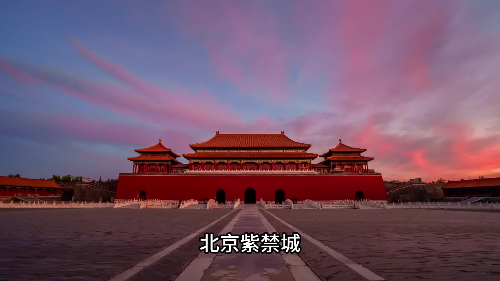
兩百多名大臣按照官階由高至低整齊排列，伏在左順門外，口中呼喚「大行皇帝」，哭聲震天。這是一場明朝的示威遊行正在進行。我們知道中國自從進入到民國開始，學生遊行、工人遊行都是很常見的情況，尤其是在北京，天安門是遊行的重點地段。一般這種遊行都是知識分子發起的，知識分子為了向當權者抗議，組織示威遊行。這樣的示威遊行在古代也有，也是由當時的知識分子發起的，當時古代的知識分子叫士大夫，遊行的名字也不大一樣，當時的名字叫做「勸諫請願」。這次勸進請願發生的地點是在左順門。
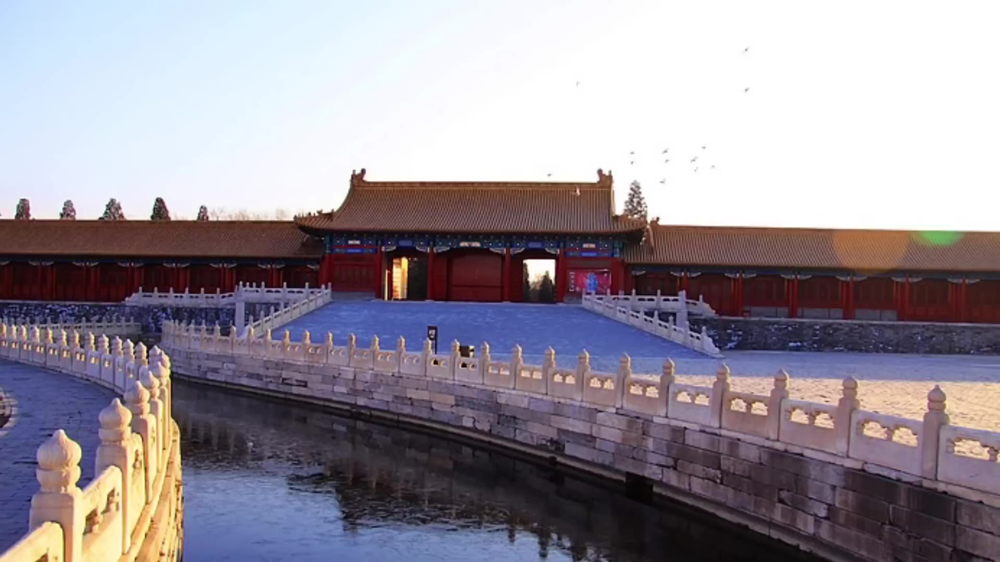
從清朝一直用到現在，當時叫左順門。
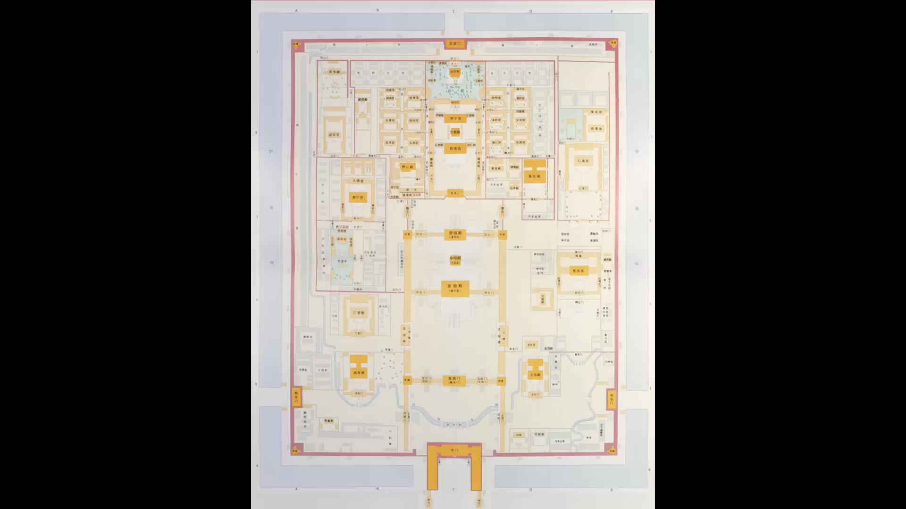
在順門在什麼位置？左順門在什麼位置？我們看一下從太和殿開始找，太和殿當時叫奉天殿，奉天殿南邊是奉天殿廣場，皇帝和大臣們每天的早朝就是在這舉行。然後奉天殿廣場的南門叫奉天門，從奉天門出來往南是金水橋，金水橋的南面是午門，午門一般大家都很熟悉了。金水橋東面的門就是左順門，左順門外面是文華殿；金水橋西面的門叫右順門。
明代皇城的佈局理念是「東文西武」，文華殿象徵著文治，所以大臣們每天上朝的時候也是按照這個規矩走「東文西武」，文臣走東面從左順門進來，武臣走西面從右順門進來。進來之後他們都在奉天門門前排隊等候早朝。所以這個左順門是文官上朝的必經之路。左順門不僅僅是一座門，它還可以說是一個行政場所，因為當時大臣們呈送給皇帝的奏疏都是在這遞交給負責傳達的宦官，皇帝要傳達的聖旨包括一些日常的指令，宦官也是在這傳達給各位大臣。所以左順門不僅僅是文官上朝的必經之路，也是大臣請旨和皇帝傳旨的重要樞紐。
兩百多個大臣伏在左順門外，實際上是封鎖了皇帝和文官聯繫的咽喉要道。我們再看兩百多個大臣的動作，他們的動作有一個專有術語叫「伏闕請願」。「闕」是宮門的意思，「伏闕請願」就是伏在宮門外面請願。關鍵是這個「伏」字，他們是「伏」在地上，標準的動作是雙膝著地跪在地上，屁股靠在腳後跟上，然後上身前傾，額頭觸及地面或者接近地面。大臣們用身體做出這個動作，表明自己是臣子，處在低處，表現出對皇帝的忠誠和卑微。但是他們做出這個動作之後長跪不起，長跪不起是在向皇帝施壓，通過這種精神綁架、道德綁架，向皇帝表達：如果你不聽從我們的勸諫、不聽從我們「正確」的建議，我們就會一直跪在這裡。
除了跪之外，他們口裡面還喊口號，他們喊的口號跟現在的遊行喊口號不一樣，現在遊行喊口號喊的是你抗議什麼你就喊什麼，他們不是，他們喊的口號是「大行皇帝」，然後開始大哭，扯開嗓子哭，一邊哭一邊喊「大行皇帝」。「大行皇帝」是指剛死不久的皇帝，他們喊「大行皇帝」就是在向剛死不久的皇帝告狀，告狀說先帝啊，你看啊，你的繼位者要破壞祖宗留下的規矩了。兩百多個大臣跪在左順門外，黑壓壓的一片，扯開嗓子又是哭又是喊，這場面要是放到今天也是夠壯觀的，何況是在當時，是在靜謐的、莊嚴的紫禁城裡面。
他們為什麼發起這次請願運動？實際上這次請願運動是嘉靖年間「大禮議」事件的最後一幕，是皇帝和臣子們的終極對決。我們今天要講的主題就是這場嘉靖年間的「大禮議」事件，這次事件影響深遠，影響到了整個明朝在後期的走向。它是怎麼影響的？這兩百多個大臣和皇帝的終極對決到底是誰贏了？我們接下來就一層一層的剝開說明。
我們先說嘉靖皇帝朱厚熜進京當皇帝的過程。
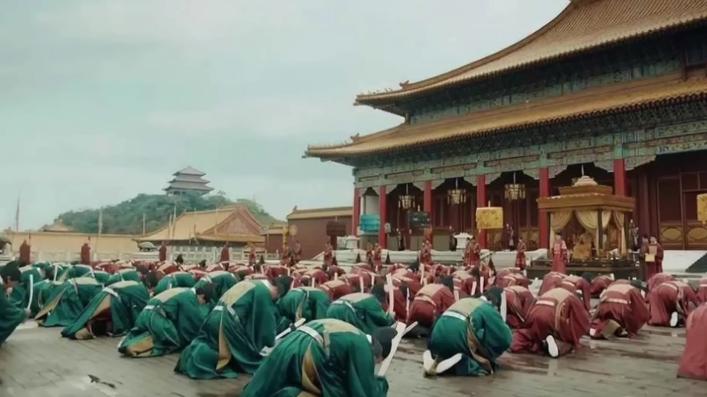
朱厚熜出生的時候，估計他肯定沒想到有一天他能進京當皇帝。他是在遠離京城的湖北安陸州出生的，安陸州就是現在的鐘祥市，是湖北的一個縣級市。朱厚熜的父親叫朱佑標，朱佑杬是成化帝的第四個兒子。成化帝的兒子們我們說過，他前兩個兒子都天折死了，第三個兒子是偷偷養大的，就是朱佑樘，朱佑樘繼承皇位就是明孝宗弘治帝（口誤）。朱佑杬排行第四，是朱佑樘最大的弟弟。朱佑樘繼承皇位之後，就把朱祐杬派到湖北安陸州就藩，朱祐杬的封號是「興王」。
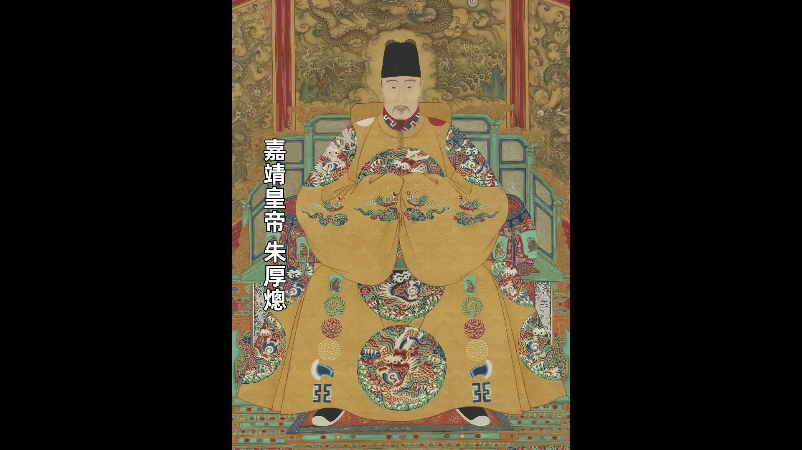
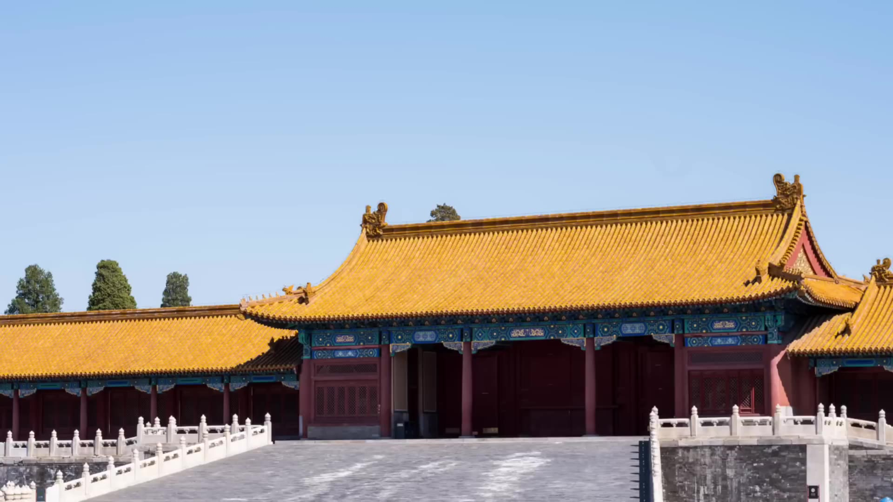
00:05:01
朱厚熜就是在安陸州的興王府出生的。正德十四年的時候，朱祐杬去世，正德帝賜給他的謚號是「興獻王」。朱祐杬去世之後一年多，不到兩年，正德十六年三月，年僅15歲的朱厚熜正式受襲封為興王。就在他剛剛被封為興王之後的幾天，北京就傳來消息，要迎接朱厚熜進京當皇帝。為什麼是他當皇帝？因為正德皇帝朱厚照去世的時候沒留下皇子。
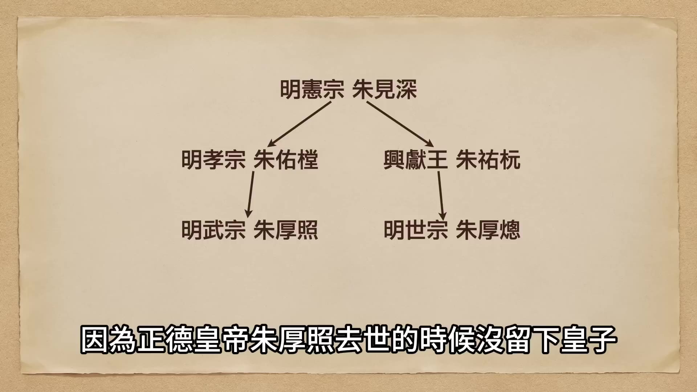
沒留下皇子，按照明朝的祖制就是「兄終弟及」。但朱厚照也沒有親弟弟，他是獨生子，他父親明孝宗只有他這麼一個兒子。所以明孝宗往下這一支就算是斷了，就得找離明孝宗血緣關係最近的弟弟。離明孝宗最近的弟弟就是朱佑杬，朱佑杬的長子是朱厚熜，所以朱厚熜就是在法理上沒有疑問的應該是繼承皇位的人。當時的內閣首輔是楊廷和，楊廷和在和太后張氏商議之後，決定迎接朱厚熜進京繼位。
楊廷和起草了文書，並派出使團到湖北安陸州迎接朱厚熜。使團到達安陸州興王府的時候，朱厚熜完全沒有準備，他當時還是個少年，虛歲剛剛15歲。尤其是他是藩王世子，並不是皇子，他甚至都沒去過北京，都沒去過紫禁城。他是在安陸州這個小縣城出生的，在小縣城長大的，突然要讓他離開他這個出生長大的地方，去一個完全陌生的地方面對一群陌生的人，他內心應該是比較忐忑的。
但是朱厚熜的表現卻很沈穩。北京使團來的時候，跟他傳達了北京朝廷很著急的態度，說已經有一個多月國家無主了，舉國上下都期盼新君蒞臨，請世子盡快入京。朱厚熜卻不著急，他先是到父親的墓地辭別父親，然後又跟母親告別。辭別母親6天之後，他才不緊不慢的出發，跟隨使團前往北京。北京使團來的時候由於著急，他們只用12天就到達了安陸州，在迎接朱厚熜往回走的時候，足足走了20天才走到北京城外。走到北京城外還沒進城，朱厚熜就跟北京的朝臣們發生了第一場較量。
當時內閣首輔是楊廷和，楊廷和是一個很正統的儒家官僚，是一個很有才能的賢臣。但是賢臣沒碰上明君，他輔佐的正德皇帝朱厚照不聽勸諫，楊廷和曾經多次的去勸駁朱厚照，不聽，楊廷和也多次的請辭。終於改朝換代了，楊廷和對於新君有很意的期待，他非常想在改朝換代之後施展自己的抱負，輔助新君使國家再次興旺。正德皇帝去世之後，朝中所有的事情都是楊廷和在統籌辦理，包括選定朱厚熜當接班人、包括跟皇太后張氏商議、包括派出使團迎駕，也包括這次安排朱厚熜進京的流程。楊廷和跟禮部一起，世子將以皇太子的身份繼位為新君，這就意味著在繼位之前朱厚熜需要先完成成為皇太子的儀式，他就需要從崇文門入城，然後走東華門住到文華殿，在文華殿完成皇太子的儀式，然後再擇日加冕為皇帝。看到這個方案之後，朱厚熜當場拒絕。
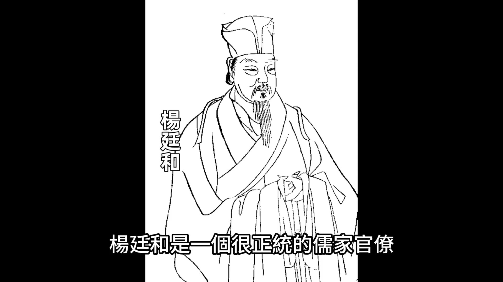
他說根據《武宗遺詔》，他來北京是繼承皇位的，不是來當皇子的。遺詔裡面並沒有說需要先當皇子再當皇帝。我們看朱厚熜提出的這個問題跟他的年齡非常不相符，他才剛剛15歲就有這麼高的政治敏感度。他的堂兄朱厚照也是15歲登基，朱厚照登基的時候還在拉著一幫小太監玩摔跤踢足球呢，而朱厚熜卻能提出這樣的問題。從這一刻就能看出來這個新君的政治素養絕對是很高的。
我們來分析一下朱厚熜直接當皇帝和先當太子再當皇帝有什麼區別。最後都是當皇帝，為什麼在這個事上朱厚熜要這麼斤斤計較？這裡面最主要的區別是朱厚熜需要先過繼給明孝宗當兒子，以明孝宗兒子的身份登基當皇帝。這樣朱厚熜就要脫離自己原來的家庭關係，他的親生父親朱祐标在宗法上就不再是他的父親，他的親生母親也不再是他的母親，他的親生父親變成了他的叔叔，他的親生母親變成了他的叔母。他要認明孝宗朱佑樘當父親，要認明孝宗的皇后張氏當母親。這是朱厚熜不願意接受的。
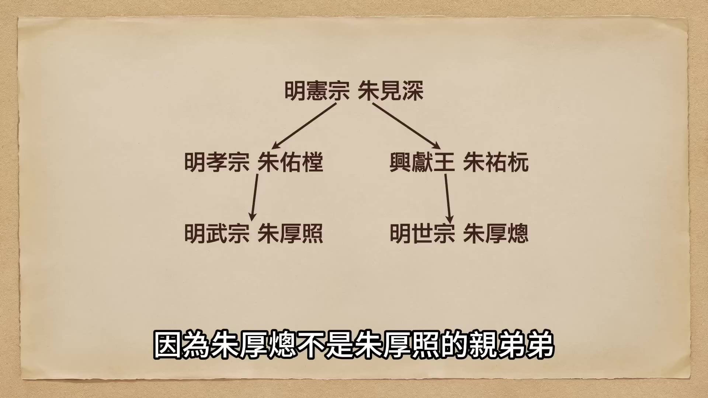
這裡呢我們再多說一下說一下皇位的兄終弟及。朱厚熜這種情況的兄終弟及其實很少見，因為朱厚熜不是朱厚照的親弟弟，是他表弟，是他父親的弟弟的兒子。這樣的兄終弟及就有兩種途徑，一種是朱厚熜作為朱厚照的表弟兄終弟及。
00:10:00
朱厚熜繼承的是朱厚照的皇位，這種情況就默認了他必須要先過繼給明孝宗為嗣子；另外一種情況是朱佑標作為朱佑樘的弟弟，朱佑樘這一支斷了，根據兄終弟及的原則，朱佑標即位，但是朱佑標已經死了，就由他的兒子朱厚熜繼位，繼承的是他父親朱祐杬的皇位。這兩種途徑雖然最後都是朱厚熜繼位，但是過程不一樣，就涉及到一個問題：如果按照第一種途徑，在法理上朱厚熜就得過繼給明孝宗，變成明孝宗的兒子，再繼承皇位，到底是哪種途徑繼位？在楊廷和起草的《武宗遺詔》裡面也沒有明說。也許在這些文官大臣的腦袋裡面認為不需要說明，他們就默認朱厚熜只能是先過繼給明孝宗作為明孝宗的繼承人，然後繼位。
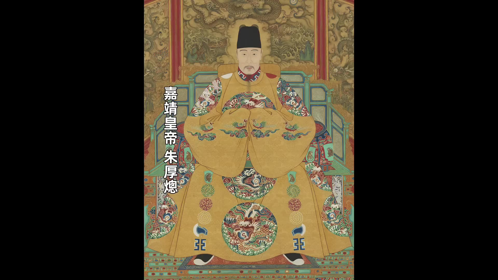
但是朱厚熜不願意，他認為《武宗遺詔》裡面說的很明白，讓他來是來當皇帝的，並沒有說要先當皇太子。本來先當皇太子這個要求也屬於一個是節外生枝的要求。楊廷和最初提出來朱厚熜的繼承資格，包括他起草《武宗遺詔》都沒有提到過還需要先當皇太子這個環節。即使他默認朱厚熜是應該過繼給明孝宗的，但是他也沒認為非得有必要再走一遍當太子這個程序，畢竟先帝已經去世了，朱厚熜這個藩王世子繼位又很特殊，祖制裡面也沒有先例，沒說這種情況的程序應該怎麼走。
按理來說也都行，但是為什麼朱厚熜已經到北京城外了，又節外生枝多出了這麼一個環節？
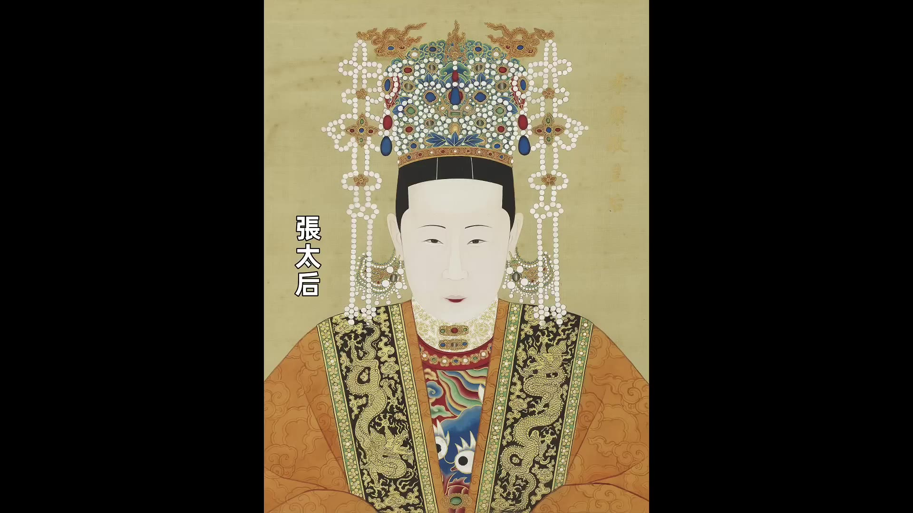
原因是出在張太后身上。正式走一遍皇太子的程序，意味著朱厚熜正式的改變身份，變成了明孝宗的兒子，也變成了張太后的兒子。張太后自己的兒子雖然死了，但是新來的君主還奉她為母后，她的地位和身份就還是牢固的。所以她是唯一能讓朱厚熜過繼給明孝宗的關鍵人物。楊廷和等文官大臣本來也認為從法理上來說朱厚熜是應該過繼給明孝宗，所以他們也認為先走皇太子的流程也沒什麼不妥。所以楊廷和和禮部的安排就是讓朱厚熜進東華門，住在文華殿，先完成成為皇太子的儀式。沒想到朱厚熜小小的年紀居然會反對。其實我們站在朱厚熜的角度來想，他是以藩王世子的身份來到北京，對於北京的一切他都很陌生，尤其是周圍的人，這些文武大臣也好，包括紫禁城裡面的張太后，對於這些人他是充滿了戒備和警惕。他和朱厚照不一樣，剛才我們說朱厚照跟他一樣都是15歲登基，但是朱厚照是從小作為嫡長子，從小作為皇太子就被養在皇宮裡面，他可以大鬧皇宮，可以隨心所欲的折騰，但是朱厚熜不行。朱厚熜是從鄉下來的，在北京沒有根基，沒有自己人，所以他必須要自己小心謹慎，對於一切有可能對他不利的事情他都要錙銖計較。朱厚熜非常堅定的退回禮部呈上的流程，讓他們重新安排。對於朱厚熜的反對，楊廷和有點出乎意料，但是他也沒放在心上，他率領群臣以上疏的方式再次請求朱厚熜接受禮部擬定的流程，但是朱厚熜還是拒絕。
這樣雙方就僵持不下，僵持不下著急的是朝臣，因為國不可一日無君，現在國家無君已經有一個多月了，卻不能即位，所以朝臣們很著急，朝臣們擔心再這麼拖下去人心浮動必定生亂，所以朝臣開始做張太后的工作。最後張太后只好妥協，張太后同意可以跳過皇太子的環節直接登基。於是禮部就修改流程，興世子朱厚熜從正陽門入北京，經過大明門入宮，然後直接登基。4月22號舉行登基大典，4月22號登基大典舉行完畢之後，大臣們總算是松了一口氣。這種由旁系入繼由藩王世子登基為君的局面，本朝還是第一次出現，誰也沒有經驗，雖然這個過程中間出了一些小岔子，但是好歹都已經過去了，萬象更始，國家可以步入正軌。
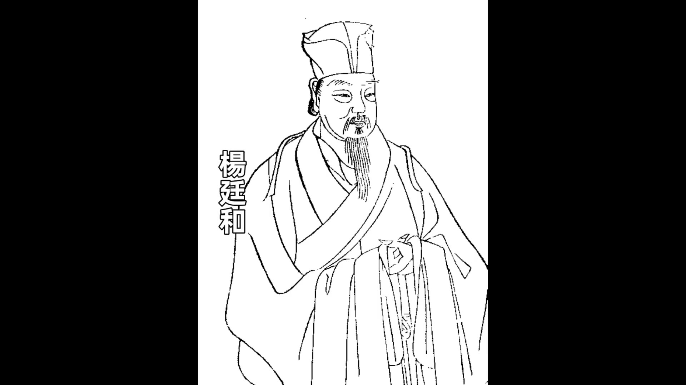
在正德由於明武宗不聽歡諫，楊廷和治國的抱負一直都沒有實現，萬象更新番事業他要好好幹。朱厚熜登基的《即位詔書》是楊廷和起草的，這份《即位詔書》楊廷和列出來了70多條要改革的弊政和要推行的新政。這份《即位詔書》差不多就是一份改革宣言。朱厚熜登基之後對於楊廷和要幹的事業全部都支持，這樣朝堂上的大臣們都很興奮，他們終於等來了一位心目中的明君。在嘉靖登基之後的兩三年內，朝廷推出了一系列的改革措施，主要的幾項有我們簡單說一說：第一解散豹房，豹房裡面明武宗違規任命的那些官員該抓的抓，該遣散的遣散。
00:15:00
嘉靖即位後立即展開政治改革，首項措施是清理權臣。像豹房內最得勢的邊軍將領江彬直接被處決，其他犯錯較輕的官員全部遣散，邊軍士兵也全數遣返回鄉。第二項是裁汰錦衣衛，以錢寧為首的錦衣衛在正德年間作惡多端，文官集團掌權後對其進行大規模裁撤。第三項整肅宦官，正德年間宦官專權的問題在嘉靖登基後立即被處理，所有曾作惡的宦官全數清理，其權力亦被嚴格限制。第四項則是清理皇室與外戚的莊田，正德年間大量皇室與外戚違規佔有民田的問題被大臣逐一勘察並上報，嘉靖亦批准勒令歸還民田。這些措施迅速扭轉了正德年間怠惰的政治局面，朝野上下呈現欣欣向榮之勢，此階段政治被稱為「嘉靖新政」。嘉靖對大臣推行新政並未反對，其關注點可能在其他方面。
嘉靖登基第三日即派人前往湖北安陸州迎接其母蔣氏來京，同時命禮部商議更改其父興獻王封號事宜，這便是「大禮議」的起點。大禮議核心在於「禮」字，傳統儒家禮法確立人與人間的不平等關係，如「君君臣臣父父子子」所示。個人在家庭與社會中皆有特定差等位置，這套禮法實質上是主權制度下的等級秩序。帝制之所以能維持千年，正因其禮法確立的秩序。帝制終結後，清朝被推翻，政權移交中華民國，袁世凱雖任首任大總統，但最終仍試圖復辟帝制。袁世凱復辟並非私心所致，而是因帝制崩潰後原有禮法失效，新引進的西方制度無法適應中國社會，導致民間秩序與官僚體系全面混亂。袁世凱為重建秩序，先後舉行祭孔、祭天大典，試圖恢復儒家禮法與等級制度。
「大禮議」本質上是皇帝與大臣對儒家「名分」的爭奪。嘉靖要求禮部議定其父興獻王稱號，因興獻王現有稱號為「興獻王」，「王」字代表親王地位，但嘉靖認為其父稱號應高於普通親王。禮部雖認同需重新議定，但因本朝無先例，只得追溯前朝。查閱前朝案例發現，漢代曾有漢成帝冊立侄子劉欣為皇太子的先例。
00:20:02
劉欣成為皇太子的同時，宋代亦發生過類似爭議。宋仁宗無皇子，乃立濮安王之子趙曙為皇太子，趙曙即後來的宋英宗。宋英宗即位後，欲以本生為皇考，「皇考」為對已故父親的尊稱。此舉引發學者激烈爭議，歐陽修主張可尊親生父親為皇考，司馬光則認為既已過繼他人為子，便不能以本生父親為皇考。當時理學宗師程頤支持繼嗣派，認為既已過繼宋仁宗，便應以宋仁宗為皇考。此議論持續十八個月，最終以妥協方案解決：宋英宗可稱親生父親為皇考，但名義上仍維持其為宋仁宗繼子的身份。此後理學界形成共識，認為過繼後應以養父為皇考，此說成為後世權威，如嘉靖皇帝即位時亦遵循此原則。
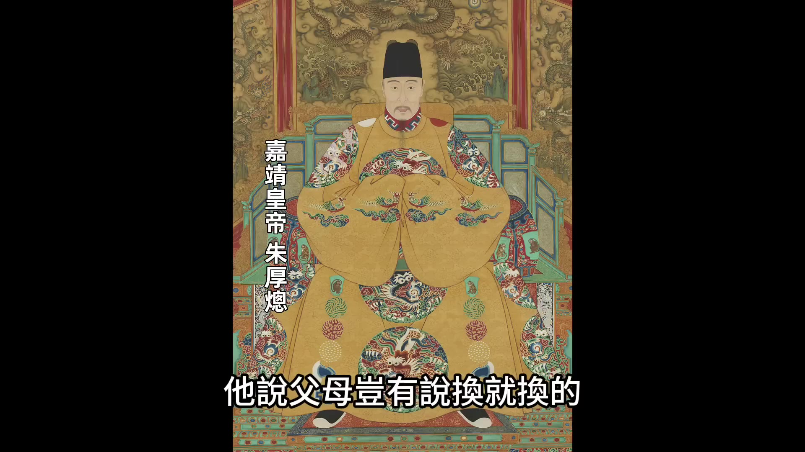
嘉靖皇帝即位時，禮部與內閣堅持其應以明孝宗為皇考，將其親生父親朱祐杬改稱「皇叔父興獻大王」，母親改稱「皇叔母興獻王妃」。嘉靖見此結果極為不滿，認為父母豈有說換就換之理，遂將議案退回禮部重議。禮部再議後仍堅持原議，並附上程頤舊疏作為理據。嘉靖不願妥協，遂將議案留中不發，此舉與其入京時拒絕接受「皇子」稱號的態度如出一轍，其核心主張為「繼統不繼嗣」——願繼承皇位，但不願承認明孝宗為其養父。
僵局持續兩月後，朝中終於出現轉機。嘉靖登基當年新科進士張璁，時年四十七歲，雖為禮部小官，卻趁機提出支持皇帝的奏疏。此舉首次出現朝臣支持皇帝的聲音，嘉靖聞訊極為欣喜。更令其高興的是，張璁奏疏論證嚴謹，從三個層面反駁大臣所引兩例：其一，漢哀帝與宋英宗皆早年立為皇儲，長居東宮，過繼養父之例可通；嘉靖則從湖北來京，未經東宮撫養，直接繼位，與過繼養父之說不符。其二，《武宗遺詔》明言「興獻王長子，根據倫序應當立為皇帝」，毫無過繼明孝宗之意，僅依祖訓繼位。其三，漢哀帝與宋英宗之例與嘉靖情形本質不同，不可簡單比附。
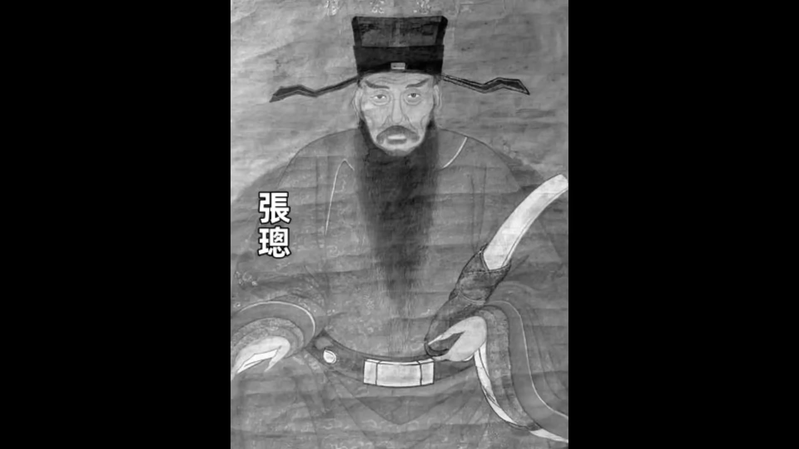
00:25:00
跟宋英宗的情況不一樣，朝臣引用這兩個先例並不合適。第二個方面他說的是根據人情來說，現在興獻王已經不在人世了，皇帝在祭祀的時候喊他一聲皇叔父，也許還不是特別難為情。但是興獻王妃還在世，這是皇帝的生母，而且就在來北京的路上，母子見面之後，你讓皇帝怎麼稱呼自己的親生母親？難道要叫皇叔母嗎？這是不是太不符合人情了？而且要是真叫皇叔母，那母子的關係就得以君臣之禮相見，這也太不孝了吧。這是張璁說的第二個方面。
第三個方面，他是從「禮」的起源上來講的。他說最高的經典《禮記》說得很清楚：「順人情故謂之禮」，也就是說禮不是從天而降的，也不是從地底下鑽出來的，而是起源於人的情感。所以禮絕對不應該違背人情。既然從人情上說，不通過繼給孝宗就是說不通的。這是張璁的論點，有理有據，非常清晰。
這裡面我們還要多說，張璁的觀點不是孤立的，他的思想是有根源的。他的根源是姚江王門，姚江王門指的就是王陽明，直接介入到大禮議，明顯跟程頤的繼嗣派是相對立的。王陽明說：「天下古今之人其情一而已矣，先王制禮。」張璁的觀點很顯然是來自王陽明的理論，而王陽明的理論跟當時傳統士大夫所捍衛的宋儒理學是相左的。張璁的奏疏就是很鮮明的反對宋儒理學的一股新興思想的崛起。這場「大禮議」要只是一場皇帝為了自己父親的名聲跟大臣們的一種普通的爭執，也不會走的那麼深遠。它能夠影響那麼深遠，是因為它是一場由一群捍衛傳統宋儒理學的士大夫王學思想的挑戰時候他們做出的反抗。
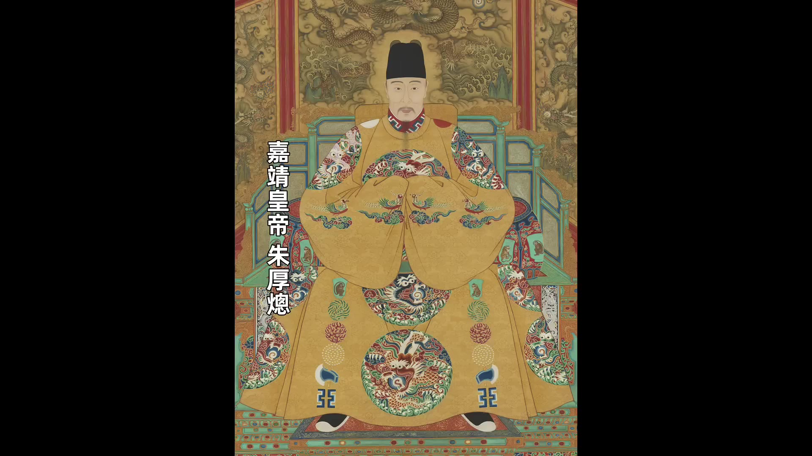
嘉靖皇帝朱厚熜看到張璁的奏疏之後，如獲至寶，立刻發給內閣廷議，然後讓內閣根據這篇奏疏尊他的父親為「興獻皇帝」。內閣收到之後
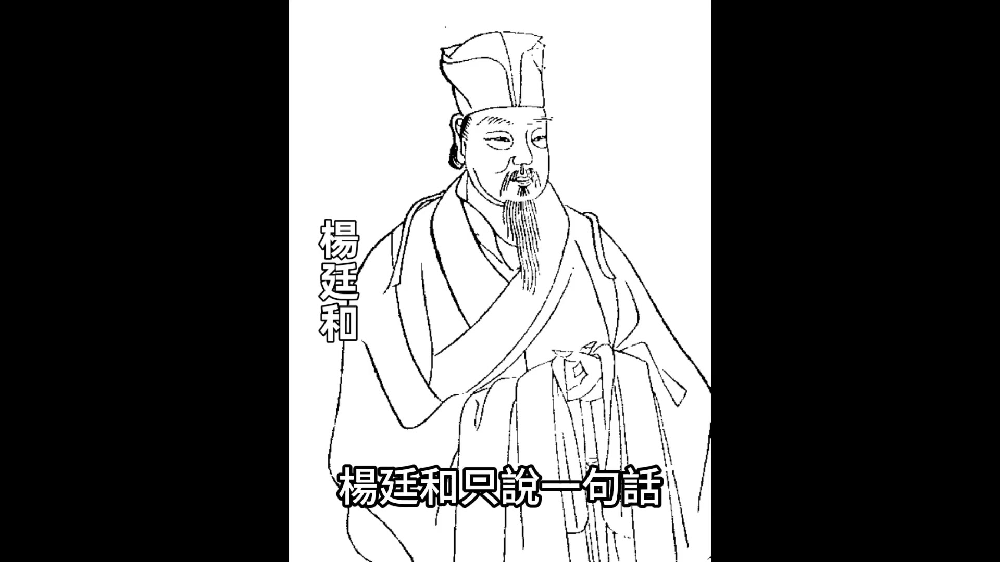
然後就把奏疏給「封還」，是一個專有名詞，這是明代內閣的一項權力。皇帝的旨意下發給內閣，內閣要是認為不妥，就可以退回給皇帝，請皇帝重新考慮。「封還」相對的是皇帝如果不同意內閣的意見，皇帝可以「留中」。之前嘉靖對內閣就用過「留中」這招，這次內閣回敬一個「封還」，算是針鋒相對。皇帝和朝臣再次陷入到僵持不下的局面。
這時候又出來一個人打破了這個僵局，這個人是嘉靖皇帝的母親興獻王妃蔣氏。嘉靖登基之後第三天就派人去接他母親，現在終於他母親人已經到達北京城外的通州了。她到通州之後就聽說了兒子跟朝臣們起了爭執，她只說了一句話，叫「怎麼能讓我的兒子去給別人當兒子呢」，這句話說得很強硬也很堅決，表達她堅決不同意的態度。她不光嘴上不同意，還用實際行動來表達，說「這個問題不解決，我就待在通州不進北京城」。
嘉靖皇帝聽說母親來了，居然拒絕進城，淚流不止，跑到張太后跟前說：「我願避位奉母歸」，就是說「我這個皇帝不幹了，我接上我母親回湖北去」。要說這母子倆呀，不知道是串通好了演這麼一齣戲，還是心有靈犀的有這個默契，一個在城外面表達傷心憤怒，一個在皇宮裡面抹眼淚說「我不幹了」。這下大臣們就都慌了，史書裡面用了四個字叫「群臣惶懼」，惶是慌亂的意思，懼是害怕的意思，就是說大臣們被搞得手足無措，方寸大亂，又十分恐懼。他們恐懼的是要是皇帝真不幹了，這個問題就鬧大了。
這時候張璁又來火上澆油，他給嘉靖上了第二道奏疏，這道奏疏說的是議禮是天子的專權，皇帝您完全可以不用理會朝臣，自己做出決定。事情鬧到這個地步，朝臣們終於扛不住了，楊廷和等大臣同意尊興獻王為尊，興獻王妃為「興獻后」，把興獻王的「王」升格為了嘉靖，終於獲得了勝利。他的母親蔣氏也從通州搬進了北京城。但是嘉靖他也有妥協，他的親生父親是變成「興獻帝」，子但是他也接受了稱明孝宗為皇考，考的意思剛才我們說過呀，是已故的父親，他接受稱明孝宗為皇考，就代表著他接受了他有兩個父親，另外一個是他政治上的父親是明孝宗。這個問題後來又再次引起風波，除了這個問題之外，還有一個問題就是朝臣們還是有所保留。
00:30:00
嘉靖皇帝朱厚熜就其父母尊號一事屢次與朝臣產生爭議。最初朝廷給予其父的稱號為「興獻帝」，少了一個「皇」字令嘉靖不滿。過了兩月他再次提議加「皇」字，將稱號改為「興獻皇帝」及「興獻皇妃」，引發激烈爭議。楊廷和率領內閣三位大學士與六部尚書集體辭職罷工，嘉靖被迫妥協。此後兩次爭議中，嘉靖以撂挑子威脅時朝臣妥協，但朝臣集體罷工時嘉靖亦讓步，雙方形成一種「誰不幹誰就贏」的對峙態勢。然而朝臣集體罷工對政局影響甚大，嘉靖雖暫時忍讓，卻埋下日後專政的伏筆。
嘉靖二年因織造事件再次引發爭議，楊廷和最終被批准辭職離京，標誌著朝臣影響朝政的時代終結。嘉靖三年，嘉靖再次提議為其父加「皇」字，將「興獻帝」改為「興獻皇帝」。此時楊廷和雖已離任，但朝臣仍保持統一立場，首輔蔣冕率領內閣與各部官員反對。嘉靖此時已培養出張璁、桂萼、方獻夫、席書、霍韜等支持者，其中張璁因大禮議第一回合遭楊廷和調往南京，卻在南京結識同為新思想陣營的桂萼、方獻夫等人，形成新派思想陣營。
嘉靖獲得了張璁等人的支持後，逐步掌握主動權，最終朝臣妥協接受「興獻皇帝」稱號。然而嘉靖對「本生皇考恭穆獻皇帝」稱號中的「本生」二字仍感不滿，認為此詞強調親生父親的說法在祭祀時顯得多余。此爭議實質涉及繼嗣派與繼統派的理論分歧——繼嗣派主張嘉靖過繼孝宗成為嗣子後繼承皇位，而繼統派（以張璁等為代表）則主張嘉靖可直接繼承皇位而無需過繼。嘉靖要求去除「本生」二字，實質是對繼嗣派禮法的徹底否定。
00:35:01
嘉靖要求去掉「本生」兩個字，等於在禮法最根本的思維理論上與文官集團形成尖銳對峙。原來嘉靖雖一再要求為其親生父親升格，但最終仍同意稱孝宗為「皇考」，其父親究竟是繼嗣還是直接繼統，始終處於模糊地帶，兩派含糊其詞亦能勉強共存。然而當嘉靖要求稱其親生父親為「皇伯考」、將明孝宗改稱為「皇伯考」時，文官集團終究無法接受。支持嘉靖的大臣僅有四人，反對者卻高達二百多人。文官大臣商議後決定採取最後手段，在左順門外哭訴勸諫，這就是視頻開頭所提及的場景——二百多名大臣伏於左順門外，一邊痛哭一邊高喊。嘉靖得知後立即派太監勸諫，但大臣們不為所動，堅決不離場。嘉靖隨即採取第二招，命司禮監將參與者全部登記並逮捕了八名帶頭者，另有數名大臣甚至撲向宮門捶擊門扉痛哭。嘉靖至此怒不可遏，直接調動衛成部隊當場逮捕134人，另86人被驅逐處理。兩日後，嘉靖宣佈對180多名鬧事大臣執行廷杖處置，其中17人當場被打死，其餘皆受重傷。這場持續三年的「大禮議」事件，始於口舌之辯，終於廷杖之辱，從古至今從未改變。
嘉靖最終將其父稱為「皇考恭穆獻皇帝」，去除「本生」二字後的全稱即為此。他對明孝宗的稱謂改為「皇伯考」，明確表示未過繼給明孝宗。透過興獻王稱號的演變可梳理完整過程：最初嘉靖父親僅稱「興獻王」，嘉靖即位後認為此稱謂與普通藩王無異，遂要求提升至「興獻大王」。嘉靖不滿「大」字稱謂不倫不類，堅持升格為「帝」。經過激烈爭議後，大臣妥協為「興獻帝」，嘉靖仍不滿，要求再加「皇」字成為「興獻皇帝」。最終嘉靖父親的稱號達至頂點，其稱謂由原定「本生皇考恭穆獻皇帝」改為「皇考恭穆獻皇帝」。左順門事變後，嘉靖在這場持續三年的爭議中大獲全勝，不僅實現為父親爭取名號的目標，更徹底清除內閣與朝臣限制其權力的勢力，樹立自身權威。此後嘉靖更深入運用禮法作為統治工具，透過禮教改革徹底控制朝臣思想意識形態，達成以心馭人的效果，這也是他退居西苑二十多年不上朝卻始終掌握全局的關鍵原因。
00:00:00
嘉靖三年7月15號北京紫禁城
200多名大臣按照官階從高到低整整齊齊排列
伏在左順門外口中呼喚大行皇帝哭聲震天這是一場明朝的示威遊行正在進行我們知道中國自從進入到民國開始學生遊行工人遊行這都是很常見的情況尤其是在北京北京天安門是遊行的重點地段一般這種遊行都是知識分子發起的知識分子為了向當權者抗議組織示威遊行這樣的示威遊行在古代也有也是由當時的知識分子發起的當時古代的知識分子叫士大夫遊行的名字也不大一樣當時的名字叫做勸諫請願這次勸進請願發生的地點是在左順門
從清朝一直用到現在當時叫左順門
在順門在什麼位置左順門在什麼位置我們看一下從太和殿開始找太和殿當時叫奉天殿奉天殿南邊是奉天殿廣場皇帝和大臣們每天的早朝就是在這舉行然後奉天殿廣場的南門叫奉天門從奉天門出來往南是金水橋金水橋的南面是午門午門一般大家都很熟悉了金水橋東面的門就是左順門左順門外面是文華殿金水橋西面的門叫右順門
明代皇城的佈局的理念四東文西武文華殿象徵著文治所以大臣們每天上朝的畤候也是按照這個規矩走東文西武文臣走東面從左順門進來武臣走西面從右順門進來進來之後他們都在奉天門門前排隊等候早朝所以這個左順門是文官上朝的必經之路左順門不僅僅是一座門它還可以說是一個行政場所因為當時大臣們呈送給皇帝的奏疏都是在這遞交給負責傳達的宦官皇帝要傳達的聖旨包括一些日常的指令宦官也是在這傳達給各位大臣所以左順門不僅僅是文官上朝的必經之路也是大臣請旨和皇帝傳旨的重要樞紐二百多個大臣伏在左順門外實際上是封鎖了皇帝和文官聯繫的咽喉要道我們再看200多個大臣的動作他們的動作有一個專有術語叫「伏闕請願」「闕」是宮門的意思『伏闕請願」就是伏在宮門外面請願關鍵是這個「伏」字他們是「伏」在地上「伏」在地上
標準的動作是雙膝著地跪在地上屁股靠在腳後跟上然後上身前傾額頭觸及地面或者接近地面大臣們用身體做出這個動作表明自己是臣子處在低處表現出對皇帝的忠誠和卑微但是他們做出這個動作之後長跪不起長跪不起是在向皇帝施壓通過這種精神綁架道德綁架向皇帝表達如果你不聽從我們的勸諫不聽從我們「正確」的建議我們就會一直跪在這裡除了跪之外他們口裡面還喊口號他們喊的口號跟現在的遊行喊口號不一樣現在遊行喊口號喊的是你抗議什麼你就喊什麼他們不是他們喊的口號是「大行皇帝』然後開始大哭扯開嗓子哭一邊哭一邊喊「大行皇帝』『大行皇帝」是指剛死不久的皇帝他們喊大行皇帝就是在向剛死不久的皇帝告狀告狀說先帝啊你看啊你的繼位者要破壞祖宗留下的規矩了二百多個大臣跪在左順門外黑壓壓的一片扯開嗓子又是哭又是喊這場面要是放到今天也是夠壯觀的何況是在當時是在靜謐的莊嚴的紫禁城裡面他們為什麼發起這次請願運動實際上這次請願運動是嘉靖年間『大禮議」事件的最後一幕是皇帝和臣子們的終極對決我們今天要講的主題就是這場嘉靖年間的「大禮議』事件這次事件影響深遠影響到了整個明朝在後期的走向它是怎麼影響的這200多個大臣和皇帝的終極對決到底是誰贏了我們接下來就一層一層的剝開說明
我們先說嘉靖皇帝朱厚熜進京當皇帝的過程
朱厚熜出生的時候估計他肯定沒想到有一天他能進京當皇帝他是在遠離京城的湖北安陸州出生的安陸州就是現在的鐘祥市是湖北的一個縣級市朱厚熜的父親叫朱佑标朱佑杬是成化帝的第四個兒子成化帝的兒子們我們說過他前兩個兒子都天折死了第三個兒子是偷偷養大的就是朱佑樘朱佑樘繼承皇位就是明孝宗弘治帝（口误）朱佑杬排行第四是朱佑樘最大的弟弟朱佑樘繼承皇位之後就把朱祐杬派到湖北安陸州就藩朱祐杬的封號是「興王』
00:05:01
朱厚熜就是在安陸州的興王府出生的正德十四年的時候朱祐杬去世正德帝賜給他的謚號是所以當時他被稱作是「興獻王」朱祐杬去世之後一年多不到兩年正德十六年三月年僅15歲的朱厚熜正式受襲封為興王就在他剛剛被封為興王之後的幾天北京就傳來消息要迎接朱厚熜進京當皇帝為什麼是他當皇帝因為正德皇帝朱厚照去世的時候沒留下皇子
沒留下皇子按照明朝的祖制就是兄終弟及兄終弟及但是朱厚照也沒有親弟弟他是獨生子他父親明孝宗只有他這麼一個兒子所以明孝宗往下這一支就算是斷了然後就得找離明孝宗血緣關係最近的弟弟離明孝宗最近的弟弟就是朱佑杬朱佑杬的長子是朱厚熜所以朱厚熜就是在法理上沒有疑問的應該是繼承皇位的人當時的內閣首輔是楊廷和楊廷和在和太后張氏商議之後決定迎接朱厚熜進京繼位
楊廷和起草了然後派出使團到湖北安陸州迎接朱厚熜使團到達安陸州興王府的時候朱厚熜完全沒有準備他當時還是個少年虛歲剛剛15歲
尤其是他是藩王世子並不是皇子他甚至都沒去過北京都沒去過紫禁城他是在安陸州這個小縣城出生的在小縣城長大的突然問讓他離開他這個出生長大的地方去一個完全陌生的地方面對一群陌生的人他內心應該是比較忐忑的
但是朱厚熜的表現卻很沈穩北京使團來的時候跟他傳達了北京朝廷很著急的態度說已經有一個多月國家無主了舉國上下都期盼新君蒞臨請世子盡快入京朱厚熜卻不著急他先是到父親的墓地辭別父親然後又跟母親告別辭別母親6天之後他才不緊不慢的出發跟隨使團前往北京北京使團來的時候由於著急他們只用12天就到達了安陸州在迎接朱厚熜往回走的時候足足走了20天才走到北京城外走到北京城外還沒進城朱厚熜就跟北京的朝臣們發生了第一場較量
當時內閣首輔是楊廷和楊廷和是一個很正統的儒家官僚
是一個很有才能的賢臣但是賢臣沒碰上明君他輔佐的正德皇帝朱厚照不聽勸諫楊廷和曾經多次的去勸餗朱厚照不聽楊廷和也多次的請辭
終於改朝換代了楊廷和對於新君有很意的期待他非常想在改朝換代之後施展自己的抱負輔助新君使國家再次興旺正德皇帝去世之後朝中所有的事情都是楊廷和在統籌辦理包括選定朱厚熜當接班人包括跟皇太后張氏商議包括派出使團迎駕也包括這次安排朱厚熜進京的流程楊廷和跟禮部一起世子將以皇太子的身份繼位為新君這就意味著在繼位之前朱厚熜需要先完成成為皇太子的儀式他就需要從崇文門入城然後走東華門住到文華殿在文華殿完成皇太子的儀式然後再擇日加冕為皇帝看到這個方案之後朱厚熜當場拒絕
他說根據《武宗遺詔》我來北京是繼承皇位的不是來當皇子的遺詔裡面並沒有說需要先當皇子再當皇帝我們看朱厚熜提出的這個問題跟他的年齡非常不相符他才剛剛15歲就有這麼高的政治敏感度他的堂兄朱厚照也是15歲登基朱厚照登基的時候還在拉著一幫小太監玩摔跤踢足球呢而朱厚熜卻能提出這樣的問題從這一刻就能看出來這個新君的政治素養絕對是很高的我們來分析一下朱厚熜直接當皇帝和先當太子再當皇帝有什麼區別最後都是當皇帝為什麼在這個事上朱厚熜要這麼斤斤計較這裡面最主要的區別是朱厚熜需要先過繼給明孝宗當兒子以明孝宗兒子的身份登基當皇帝這樣朱厚熜就要脫離自己原來的家庭關係他的親生父親朱祐标在宗法上就不再是他的父親了他的親生母親也不再是他的母親了他的親生父親變成了他的叔叔他的親生母親變成了他的叔母他要認明孝宗朱佑樘當父親要認明孝宗的皇后張氏當母親這是朱厚熜不願意接受的這裡呢我們再多說一下說一下皇位的兄終弟及朱厚熜這種情況的兄終弟及其實很少見因為朱厚熜不是朱厚照的親弟弟
是他表弟是他父親的弟弟的兒子這樣的兄終弟及就有兩種途徑一種是朱厚熜作為朱厚照的表弟兄終弟及
00:10:00
朱厚熜繼承的是朱厚照的皇位這種情況就默認了他必須要先過繼給明孝宗為嗣子另外一種情況是朱佑标作為朱佑樘的弟弟朱佑樘這一支斷了根據兄終弟及的原則朱佑标即位但是朱佑标已經死了就由他的兒子朱厚熜繼位繼承的是他父親朱祐杬的皇位這兩種途徑雖然最後都是朱厚熜繼位但是過程不一樣就涉及到一個問題就是如果按照第一種途徑在法理上朱厚熜就得過繼給明孝宗變成明孝宗的兒子再繼承皇位到底是哪種途徑繼位在楊廷和起草的《武宗遺詔》裡面也沒有明說也許在這些文官大臣的腦袋裡面認為不需要說明他們就默認朱厚熜只能是先過繼給明孝宗作為明孝宗的繼承人然後繼位
但是朱厚熜不願意他認為《武宗遺詔》裡面說的很明白讓他來是來當皇帝的並沒有說要先當皇太子本來先當皇太子這個要求也屬於一個是節外生枝的要求楊廷和最初提出來朱厚熜的繼承資格包括他起草《武宗遺詔》都沒有提到過還需要先當皇太子這個環節即使他默認朱厚熜是應該過繼給明孝宗的但是他也沒認為非得有必要再走一遍當太子這個程序畢竟先帝已經去世了朱厚熜這個藩王世子繼位又很特殊祖制裡面也沒有先例沒說這種情況的程序應該怎麼走
按理來說也都行但是為什麼朱厚熜已經到北京城外了又節外生枝多出了這麼一個環節
原因是出在張太后身上正式走一遍皇太子的程序意味著朱厚熜正式的改變身份變成了明孝宗的兒子也變成了張太后的兒子張太后自己的兒子雖然死了但是新來的君主還奉她為母后她的地位和身份就還是牢固的所以她是唯=楊廷和等文官大臣本來也認為從法理上來說朱厚熜是應該過繼給明孝宗所以他們也認為先走=皇大子的流程也沒什麼不妥所以楊廷和和禮部的安排就是讓朱厚熜進東華門住在文華殿先完成成為皇太子的儀式沒想到朱厚熜小小的年紀居然會反對其實我們站在朱厚熜的角度來想他是以藩王世子的身份來到北京對於北京的一切他都很陌生尤其是周圍的人這些文武大臣也好包括紫禁城裡面的張太后對於這些人他是充滿了戒備和警惕他和朱厚照不一樣剛才我們說朱厚照跟他一樣都是15歲登基但是朱厚照是從小作為嫡長子從小作為皇太子就被養在皇宮裡面他可以大鬧皇宮可以隨心所欲的折騰但是朱厚熜不行朱厚熜是從鄉下來的他在北京沒有根基沒有自己人所以他必須要自己小心謹慎對於一切有可能對他不利的事情他都要錙銖計較朱厚熜非常堅定的退回禮部呈上的流程讓他們重新安排對於朱厚熜的反對楊廷和有點出乎意料但是他也沒放在心上他率領群臣以上疏的方式再次請求朱厚熜接受禮部擬定的流程但是朱厚熜還是拒絕
這樣雙方就僵持不下僵持不下著急的是朝臣因為國不可一日無君現在國家無君已經有一個多月了卻不能即位所以朝臣們很著急朝臣們擔心再這麼拖下去人心浮動必定生亂所以朝臣開始做張太后的工作最後張太后只好妥協張太后同意可以跳過皇太子的環節直接登基於是禮部就修改流程興世子朱厚熜從正陽門入北京經過大明門入宫然後直接登基4月22號舉行登基大典4月22號登基大典舉行完畢之後大臣們總算是松了一口氣這種由旁系入繼由藩王世子登基為君的局面本朝還是第一次出現誰也沒有經驗雖然這個過程中間出了一些小岔子但是好歹都已經過去了萬象更始國家可以步入正軌
在正德由於明武宗不聽歡諫楊廷和治國的抱負一直都沒有實現萬象更新番事業他要好好幹朱厚熜登基的《即位詔書》是揚廷和起草的這份《即位詔書》楊廷和列出來了70多條要改草的弊政和要推行的新政他這份《即位詔書》差不多就是一份改革宣言朱厚熜登基之後對於楊廷和要幹的事業全部都支持這樣朝堂上的大臣們都很興奮他們終於等來了一位心目中的明君在嘉靖登基之後的兩三年內朝廷推出了一系列的改革措施主要的幾項有我們簡單說一說第一解散豹房豹房裡面明武宗違規任命的那些官員該抓的抓該遣散的遣散
00:15:00
像豹房裡面當時最得勢的邊軍將領江彬直接抓起來殺了其他犯錯不多的官員全部遣散那些邊軍的士兵也全部都遣返回去第二裁汰錦衣衛以錢寧為首的錦衣衛在正德年間作惡多端文官集團得勢之後對錦衣衛也大加裁汰第三整肅宦官正德年間宦官專權嘉靖登基之後當年做過惡的宦官全部都被清理一遍然後宦官的權利被嚴格的限制第四 清理皇室和外戚的莊田在正德年間有很多皇室和外戚違規強佔民田自大臣們一個個都勘察出來上報給嘉靖嘉靖也同意勒令他們歸還民田這是一些主要的措施退有很多其他方面的措施就不—一說了這些措施迅速改變了正德年間怠惰的政治局面朝廷上下一切看起來都是欣欣向榮這段時間的政治被稱為是「嘉靖新政」嘉靖對於大臣們推行新政並不反對他在意的可能也不是這個方面他在意的是另外的方面
嘉靖登基之後第三天他就派人去湖北去湖北安陸州迎接他的母親蔣氏來北京然後他讓禮部商議更改他父親興獻王的封號的開端這就是「大禮議」『大禮儀」關鍵是這個「禮』字是這個「禮』健是這個「禮』關鍵是這個「禮』『大禮儀」關鍵是這個「禮」我們先講一下什麼是「禮』在傳統儒家的禮法之下人和人是不平等的我們以前說過「君君臣臣父父子子」就是你是君就得按照君的標準行事你是臣就得按照臣的標準行事君和臣是不平等的你是父就要按照父的標準行事父和子也是不平等的一個男人在家裡面他既是父親也是兒子作為兒子你就要聽父親的一個男人在官場裡面你既有上級又有下級作為下級你就要聽上級的當然最上級是君主君主是所有官員的上級所以作為臣子就應該聽君主的所以每個人無論是在家庭裡面還是在社會裡面都有自己的位置這個位置是不平等的是差等的這就是儒家的禮法這套禮法說白了就是主權制度下的等級秩序禮法說起來可能有點虛要是沒有禮法中國的帝制不可能持續上千年這塊我們稍微多說一點我們知道帝制結束的標誌是清朝被推翻清朝被推翻之後政權移交給中華民國中華民國第一任正式大總統是袁世凱袁世凱當了幾年大總統之後他還是要恢復帝制還是要當皇帝他為什麼要當皇帝不是因為他私心太重
非得當皇帝不可而是帝制被推翻之後這套運行了上千年的禮法就失效了原有的禮法失效了新的從西方引進的政治制度叉水土不服整個天下就亂套了對於民間來說沒有皇帝了沒有皇帝就沒有王法了因為王法王法有王才有法皇帝都沒有了法當然也不用遵守了所以民間秩序大亂對於官僚系統來說下級不聽上級的情況也很嚴重在一個軍隊裡面比如說一個軍長他要想控制得住他下面的部隊他就必須得自己擔任一個主力師的師長必須手握兵權否則就有可能被幹掉所以整個官僚體系裡面就成為了一個實力為王的時代袁世凱想管他下面的官員也很麻煩他只能靠自己的威望只能靠輸送利益才能勉強維持政府的運轉他當時開會的時候他手下的頭號大將段祺瑞都說不來就不來說翻臉就翻臉所以沒有禮法整個國家都亂套了主要原因就是想恢復原來的禮法袁世凱在復辟之前他是先去孔廟舉行了祭孔大典又去天壇舉行了祭天大典他就是為了要恢復儒家的禮法為了恢復這套王權之下的等級制度這就是禮法的實際作用理解了這些呀我們再來看「大禮議』就知道皇帝和大臣們在爭的到底是什麼了爭名號上面那幾個字實際上在爭的是這套差別秩序下的位置這個位置在儒家裡面叫做也叫做「名分」『名分」是儒家裡面最重視的東西嘉靖皇帝讓禮部商議他已經過世的父親的稱號
就是在給他父親爭這個名分他父親現在的稱號是「興獻王』
「玉」代表他的地位是親王這是一個普通的親王死後的稱號現在他當皇帝了他認為他父親的稱號不能跟普通的親王一樣要更上一個等級所以他讓禮部去重新議定皇帝這麼說也沒毛病禮部認為確實可以重新議定但是怎麼定呢這就有點麻煩因為本朝沒有先例本朝沒有先例他們又只能再往前朝找往前朝找他們找到兩個相似的案例一個是在漢代漢代漢成帝沒有皇子漢成帝冊立他的侄子劉欣為皇太子
00:20:02
劉欣成為皇太子的同時
另外一個是在宋代宋代宋仁宗沒有皇子他立了濮安王的兒子趙曙為皇太子趙曙就是後來的宋英宗宋英宗即位之後他想以本生為皇考『皇考」是對已故的父親的尊稱以本生為皇考就是把自己的親生父親尊為皇考到底能不能這麼認定當時的大儒們一頓混戰歐陽修領導一派司馬光領導一派歐陽修一派認為宋英宗可以以親生父親為皇考司馬光一派認為不行認為既然過繼給別人當兒子了就不能以親生父親為皇考當時的理學宗師程頤的理論也支持繼嗣派認為你既然過繼給了宋仁宗繼承了宋仁宗的家業就理當成為宋仁宗的後代你是有這個義務的這場大論戰當時持續了18個月「濮議』事件這就是宋代著名的最後的結果是用了一個妥協方案宋英宗可以稱自己的親生父親為皇考但是在名義上他也維持了自己是宋仁宗繼子的身份這兩個例子要以過繼之後的父親為皇考另外一個是雖然有爭議但是程頤都認為應該是以過繼之後的父親為皇考這在理學上就形成了公認的權威後人都認為這麼做是對的所以到現在嘉靖皇帝的父親這個情況內閣和禮部都一致認為朱厚熜不能以親生父親為皇考要過繼給明孝宗以明孝宗為皇考他們給朱厚熜的親生父親也重新改名號了改成『皇叔父興獻大王」給他的母親改成「皇叔母興獻王妃』從這個名號能看出來他們想讓朱厚熜稱明孝宗為災親
改稱自己的親生父母為叔災叔母朱厚熜看到禮部商議出來的居然是這麼個結果氣不打一處來他說父母豈有說換就換的
他給退回去了讓禮部再議禮部再議再議出來的結果是大臣們不僅堅持原來的意見還爭辯說本來皇帝對於藩親只能稱叔父是不能加「皇」這個字的現在他們給出的稱號『皇叔父興獻大王」這個稱號已經算是破例了他們還把程頤當時的奏疏專門抄了一份附在後面這就有點用理學宗師的文章來教育朱厚熜的意思了朱厚熜完全不吃他們這一套又退回去讓他們再議大臣們再議結果還是堅持不變大臣們堅持不變朱厚熜也沒有辦法他只能動用自己的權力留中不發留中不發就是把問題放在那表示自己堅決不同意其實這個問題跟一開始朱厚熜進京的時候堅持不當皇子的問題一樣他的原則是「繼統不繼嗣」就是他同意繼承皇位當皇帝但是不同意當明孝宗的後代這件事反反復復爭執了兩個月現在僵持在這皇帝和朝臣誰都不肯退步這時候朝臣裡面有一個人冒出頭來幫助皇帝了這個人叫張璁
張璁是嘉靖登基這年剛考中的新科進士但是他當時已經47歲了按理來說呀47歲考中進士雖然能當官但是很難再有大的發展了所以他就觀察局勢尋找機會想要另辟蹊徑現在滿朝大臣都跟皇帝對著幹他要做第一個站出來支持皇帝的人就在皇帝和朝臣們僵持的時候張璁遞上了他的奏疏這份奏疏很重要讓這件事情發生了一個大轉折發生轉折的第一點是終於有一個朝臣開始支持皇帝了在這之前嘉靖自己是一方所有的朝臣是一方陣線分明嘉靖是一個人來的北京在朝中沒有任何自己人所有的朝臣都是跟著內閣和禮部的腳步走張璁雖然是個新科進士只是禮部的一個微不足道的小官但是畢竟有一個聲音出來幫助嘉靖了嘉靖非常高興更讓他高興的是
張璁上的這個奏疏講的有理有據條理清晰很有水平張璁這份奏疏的觀點我們需要講一下他是從三個方面來論證的第一個方面是他反對大臣們引用的兩個例子他認為這兩個例子跟嘉靖的情況有很大不同他說漢代的漢哀帝和宋代的宋英宗都是很早就被立為皇位繼承人而且一直是被養在東宮然後繼位的所以他們過繼給漢成帝和宋仁宗為嗣子這是說得通的而嘉靖皇帝是從湖北來的興世子從世子直接繼位當皇帝從來沒在東宮撫養過所以讓他過繼這點說不通而且根據《武宗遺詔》裡面說的是興獻王長子根據倫序應當立為皇帝這句話一點都沒有讓嘉靖過繼給孝宗當嗣子的意思這句話分明是說嘉靖是按照祖訓定下的規矩直接繼位為皇帝所以嘉靖跟漢哀帝
00:25:00
跟宋英宗的情況不一樣朝臣引用這兩個先例並不合適第二個方面他說的是根據人情來說現在興獻王已經不在人世了皇帝在祭祀的時候喊他一聲皇叔父也許還不是特別難為情但是興獻王妃還在世這是皇帝的生母而且就在來北京的路上母子見面之後你讓皇帝怎麼稱呼自己的親生母親難道要叫皇叔母嗎這是不是太不符合人情了而且要是真叫皇叔母那母子的關係就得以君臣之禮相見
這也太不孝了吧這是他說的第二個方面第三個方面他是從「禮」的起源上來講的他說最高的經典《禮記》說的很清楚「順人情故謂之禮」也就是說禮不是從天而降的也不是從地底下鑽出來的而是起源於人的情感所以禮絕對不應該違背人情既然從人情上說不通過繼給孝宗就是說不通的這是張璁的論點有理有據非常清晰這裡面我們還要多說-張璁的觀點不是孤立的他的思想是有根源的他的根源是姚江王門姚江王門指的就是王陽明直接介入到大禮議明顯跟程頤的繼嗣派是相對立的王陽明說天下古今之人其情一而已矣先王制禮
張璁的觀點很顯然是來自王陽明的理論而王陽明的理論跟當時傳統士大夫所捍衛的宋儒理學是相左的張璁的奏疏就是很鮮明的反對宋儒理學的一股新興思想的崛起這場「大禮議」要只是一場皇帝為了自己父親的名聲跟大臣們的一種普通的爭執也不會走的那麼深遠它能夠影響那麼深遠是因為它是一場由一群捍衛傳統宋儒理學的士大夫王學思想的挑戰時候他們做出的反抗
嘉靖皇帝朱厚熜看到張璁的奏疏之後亞如獲至寶亞立刻發給內閣廷議然後讓內閣根據這篇奏疏尊他的父親為「興獻皇帝」內閣收到之後
然後就把奏疏給『封還」是一個專有名詞這是明代內閣的一項權力皇帝的旨意下發給內閣內閣要是認為不妥就可以退回給皇帝請皇帝重新考慮「封還」相對的是皇帝如果不同意內閣的意見皇帝可以「留中」之前嘉靖對內閣就用過「留中』這招這次內閣回敬一個「封還」算是針鋒相對皇帝和朝臣再次陷入到僵持不下的局面這時候又出來一個人打破了這個僵局這個人是嘉靖皇帝的母親興獻王妃蔣氏嘉靖登基之後第三天就派人去接他母親現在終於他母親人已經到達北京城外的通州了她到通州之後就聽說了兒子跟朝臣們起了爭執她只說了一句話叫就是怎麼能讓我的兒子去給別人當兒子呢這句話說的很強硬也很堅決表達她堅決不同意的態度她不光嘴上不同意還用實際行動來表達她說這個問題不解決我就待在通州不進北京城
嘉靖皇帝聽說母親來了居然拒絕進城亞淚流不止亞跑到張太后跟前說說我願避位奉母歸就是說我這個皇帝不幹了我接上我母親回湖北去要說這母子倆呀不知道是串通好了演這麼一齣戲還是心有靈犀的有這個默契一個在城外面表達傷心憤怒一個在皇宮裡面抹眼淚說我不幹了這下大臣們就都慌了史書裡面用了四個字叫「群臣惶懼」惶是慌亂的意思懼是害怕的意思就是說大臣們被搞得手足無措方寸大亂又十分恐懼他們恐懼的是要是皇帝真不幹了這個問題就鬧大了
這時候張璁又來火上澆油他給嘉靖上了第二道奏疏這道奏疏說的是議禮是天子的專權皇帝您完全可以不用理會朝臣自己做出決定事情鬧到這個地步朝臣們終於扛不住了楊廷和等大臣同意尊興獻王為尊興獻王妃為「興獻后」把興獻王的「王」升格為了嘉靖終於獲得了勝利他的母親蔣氏也從通州搬進了北京城但是嘉靖他也有妥協他的親生父親是變成「興獻帝』子但是他也接受了稱明孝宗為皇考考的意思剛才我們說過呀是已故的父親他接受稱明孝宗為皇考就代表著他接受了他有兩個父親
另外一個是他政治上的父親是明孝宗這個問題後來又再次引起風波除了這個問題之外還有一個問題就是朝臣們還是有所保留
00:30:00
就他們給起的名號是「興獻帝」而不是「興獻皇帝』少了一個「皇」字這點不完美嘉靖心中還是不滿意過了兩個月他又跟朝臣們提出來要給他父母加上「皇」字「興獻皇帝」和「興獻皇妃」變成這又是一場鬥爭皇帝兩次提出朝臣兩次拒絕最後楊廷和率領內閣的三位大學士還有刑部尚書、兵部尚書戶部尚書、吏部尚書一起提出辭呈要辭職不幹了並且開始罷工嘉靖這才罷手暫且不提這個事了我們看這兩次的過程嘉靖贏的時候是他要撂挑子說皇帝我不幹了然後大臣們就妥協了朝臣們贏的時候呢是朝臣撂挑子也說不幹了皇帝就妥協了好像誰不幹了誰就能贏一樣但是實際上在結果上雖然贏了在氣勢上卻輸了比如這次大臣們集體罷工影響很不好這招如果總用總有一天會出事嘉靖能忍受他們的要挾也是因為他剛到北京還沒有自己的班底還沒有自己人等他慢慢培養出來自己的班底之後他就不會再忍了果然在嘉靖二年因為一個織造的事件這次爭執也是持續了好幾個月最後楊廷和又用辭職來要挾嘉靖就直接批准再也沒提出輓留楊廷和辭職離開了這讓朝臣們意識到他們可以左右朝政的時代終結了嘉靖專政的時代開始了
嘉靖三年嘉靖皇帝朱厚熜再次提出來要給他父親加上「皇』本來是「興獻帝」要改成「興獻皇帝」這時候朝廷上楊廷和雖然已經走了但朝臣們還是心很齊新上任的首輔是蔣冕蔣冕率領內閣和各部的官員一起上疏反對帝和朝臣再次展開較量不過這次嘉靖皇帝不是一個人了他已經有了好幾個幫手他這幾個幫手還是得從張璁開始說在大禮議的第一回合結束之後張璁就被楊廷和給調到南京了當時朝廷還是楊廷和主事張璁一個新科進士只能服從調動楊廷和把他調到南京的用意是讓張璁遠離京師減少和皇帝接觸的機會就可以少生事端但張璁到了南京之後促成了新派思想陣營的形成張璁要是一直在北京北京是正統的宋儒理學的天下他這種新興思想的人沒有人認可他到了南京意外的遇到了一批跟他相同的都是認可新派思想的人他們很快就結成了統-這些人裡面有一個叫桂萼一個叫方獻夫一個叫席書還有一個叫霍韜嘉靖再次挑起大禮議問題的時候這批人就紛紛從南京上疏支持嘉靖皇帝嘉靖看他們支持就逐漸把他們都從南京調到北京來
讓方獻夫做了侍講學士然後又任命席書為禮部尚書雖然只有四個自己人但是嘉靖總算是有了自己的班底有了他們四個的幫助之後嘉靖節節勝利朝臣節節敗退朝臣們終於撐不住同意了給興獻帝加個「皇』改為「興獻皇帝」在祭祀的時候『興獻皇帝」的完整稱號是『本生皇考恭穆獻皇帝』現在嘉靖給他親生父親加到皇帝的稱號按理說已經加到頭了但是他又發現一個問題『本生皇考恭穆獻皇帝』「本生皇考」這幾個字他又覺得很彆扭『皇考」是自己父親的意思「本生」是親生的意思加起來就是親生父親恭穆獻皇帝有誰會在祭祀自己父親的時候前面還得強調一下是親生的呀他對「本生」這兩個字就很不滿意這就是前面我們提到的遺留的問題了在『大禮議」第一回合的時候嘉靖做了一個妥協他還是同意稱明孝宗為皇考這樣他就有兩個父親一個是親生父親-個算是政治上的父親現在他又對「本生」兩個字不滿意要求朝臣拿掉「本生」兩個字但是拿掉「本生」兩個字並不是簡單的稱呼上的變動它隱含的是嘉靖皇帝繼承關係的由來「本生」其實是個區分加上讓大家都知道這是親生的父親還有一個不是親生的父親是明孝宗明孝宗也是父親是過繼後的父親如果把「本生」兩個字去掉了就代表著嘉靖皇帝要脫離孝宗這是完全否定了繼嗣派的禮法
這裡說明一下當時朝廷上絕大多數的大臣都可以稱為是傳統的繼嗣派繼嗣派就是嘉靖先過繼給孝宗變成孝宗的嗣子然後再繼承皇位另外一派跟他們相對的是繼統派繼統派的代表就是張璁、桂萼、方獻夫這些人他們的理論是不繼嗣只繼統就是嘉靖不用過繼給孝宗可以直接繼承皇位這是繼統派和繼嗣派的根本區別
00:35:01
所以嘉靖要求去掉「本生』兩個字就等於是在禮法的最根本的思規理論上兩個陣營白刃相接了原來嘉靖雖然一再的要求給他的親生父親升格但還是同意了稱孝宗為皇考他到底是繼嗣還是直接繼統是處於一個模糊地帶兩派含含糊糊的也能過得去但是現在他要給他的親生父親去掉「本生』兩個字他就要稱呼他的親生父親為「皇伯考』稱呼明孝宗為事情到此為止文官大臣們不能再忍了支持嘉靖的大臣雖然有四個人但是反對的有二百多人文官大臣們商量之後決定採用最後的方法在左順門外哭訴勸諫這就出現了視頻最開始說的那一幕二百多名大臣伏在左順門外一邊哭一邊喊嘉靖知道情況之後第一時間派太監去勸勸大臣們趕緊離開但是大臣們不聽一副不達目的誓不起來的架勢都還伏在地上勸不好使嘉靖就使出第二招第二招是讓司禮監把所有參與鬧事的人都登記在冊並且抓捕了帶頭的8個人還有幾個大臣站起來撲到宮門上-邊捶擊宮門一邊哭訴這把嘉靖是真的怒了嘉靖直接調來衛成部隊當場逮捕了134人另外86個人被趕走聽候處置兩天之後嘉靖宣佈將180多位鬧事的大臣廷杖處置嘉靖是鐵了心的往死裡打被打的大臣全部都受傷嚴重居然有17人被當場打死這場持續了三年的「大禮議」事件以口舌之辯開始以打屁股劇終從古至今從來沒變過
嘉靖稱他的父親為皇考去掉了「本生」兩個字全稱是「皇考恭穆獻皇帝』嘉靖稱孝宗為「皇伯考』代表他並沒有過繼給明孝宗『大禮議」事件到此結束最後我們通過興獻王稱號的變化來梳理一下整個過程最開始嘉靖的父親是被稱為嘉靖當上皇帝之後覺得不行「興獻王」跟普通的藩王一樣沒區別這不行得體現出來他爸比普通的藩王級別要高大臣們也覺得可以把「興獻王」變成「興獻大王」嘉靖還是不笞應說加個「大』字什麼意思不倫不類的你必須得給升格變成「帝』經過一番鬥爭之後大臣們又同意把「興獻王」變成「興獻帝』變成「興獻帝」之後嘉靖還是不滿意要求再加個「皇」字變成「興獻皇帝』大臣們也妥協了加了個「皇」字變成「興獻皇帝』到此為止嘉靖父親的稱號算是加到頭了然後他又要求改他稱呼的方法本來大臣們給他起的稱呼是『本生皇考恭穆獻皇帝』他要去掉『本生』兩個字運過左順門事變嘉靖大獲全勝最終定的名字是『皇考恭穆獻皇帝』這場持續了三年的嘉靖不僅實現了替他父親爭名號的目的也清除了內閣和朝臣限制他權力的勢力徹底樹立了自己的權威還不僅如此「大禮議」還讓嘉靖看到了禮法更進一步的用途在他之後當皇帝的過程中他對禮教改革非常痴迷他通過禮教改革徹底控制了朝臣們的思想意識形態
達到了以心馭人的程度這也是他後半生退居西苑二十多年不上上朝卻始終沒有對局面失去控制的原因好了今天的故事就講到這裡我開通了『1921-1945年的專題歷史課程」有興趣的朋友歡迎點擊影片下方鏈接瞭解歡迎大家點贊關注
已核實
嘉靖三年七月十五日「左順門事件」中，因群臣撼門大哭勸諫，嘉靖帝下令逮捕五品以下官員共134人下詔獄拷訊，四品以上官員暫令待罪 — 明實錄・世宗卷四十一・嘉靖三年七月15日（段44796）：「……乃撼門大哭，一時群臣皆哭，聲震闕庭，上大怒，命逮五品以下員外郎馬理等一百三十四人悉下詔獄拷訊，四品以上及司務等官姑令待罪」——確認左順門事件當日逮捕下獄人數確為134人（與影片「當場逮捕了134人」完全一致），四品以上官員暫緩處置（與影片「另外86個人被趕走聽候處置」概念相符，惟本次未查得「86」這一確切人數的出處段落）。✅
未能獨立核實
- 左順門哭諫的大臣總人數「二百多名」的確切統計來源- 四品以上暫緩處置官員的確切人數（86人）- 兩天後（七月十七日）嘉靖宣布對180多位官員施以廷杖的確切人數與死亡人數- 楊廷和列出「70多條」新政改革條目的確切清單出處- 楊廷和最終辭職獲准的確切日期（嘉靖三年前後，本次未逐一核對月日）